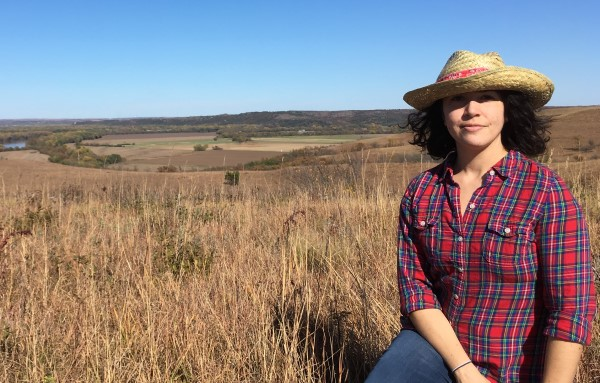

 I hold BS, MS, and PhD degrees in Environmental Engineering from the University of Oklahoma, Washington University in St. Louis (WashU), and Vanderbilt University, respectively. My graduate studies at WashU were funded in part by a National Science Foundation Graduate in K-12 Education fellowship . While at WashU I conducted research on the dissolution of lead-phosphate minerals in the Aquatic Chemistry Lab of Dr. Daniel Giammar. After completing my MS I stayed at WashU to work as a research specialist in environmental materials characterization with the Nano Research Facility. I later served as manager and senior scientist of the National Science Foundation funded, multidisciplinary, Nano Research Facility for two years.
I returned to graduate school in 2013 to pursue a PhD in Environmental Engineering (Management & Policy emphasis) in the Department of Civil and Environmental Engineering at Vanderbilt University. My studies emphasized consideration of multiple disciplinary perspectives (engineering, environmental science, management, law, and sociology) and adoption of methodolgical techniques from these and other (policy analysis and epidemiology) disciplines. My PhD research focused on understanding vulnerability and resilience of social-environmental systems, with a particular focus on the interactions between society and water, and was been funded in-part by a United States Army Corps of Engineers graduate student research fellowship hosted by the Oak Ridge Institute for Science and Education. PhD research projects examined water as a resource for agriculture, as a mode of transportation, and as a destructive force using spatial analysis, hierarchial Bayesian regression, and agent-based modeling techniques.